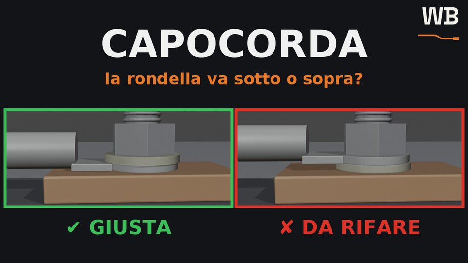
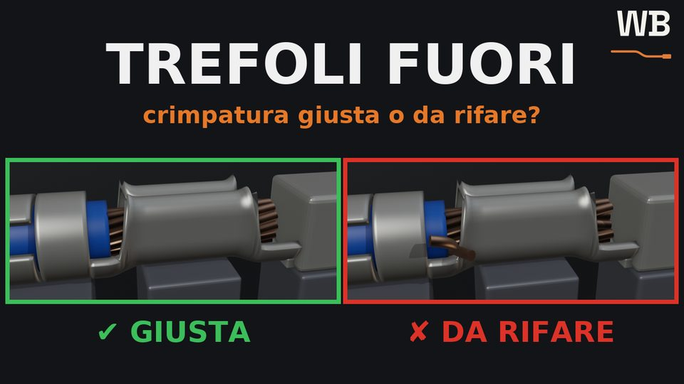
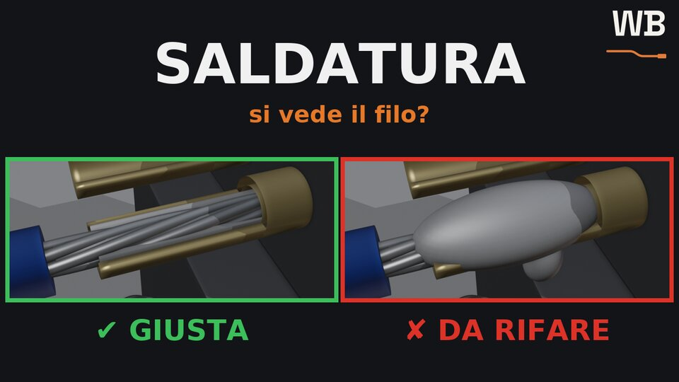
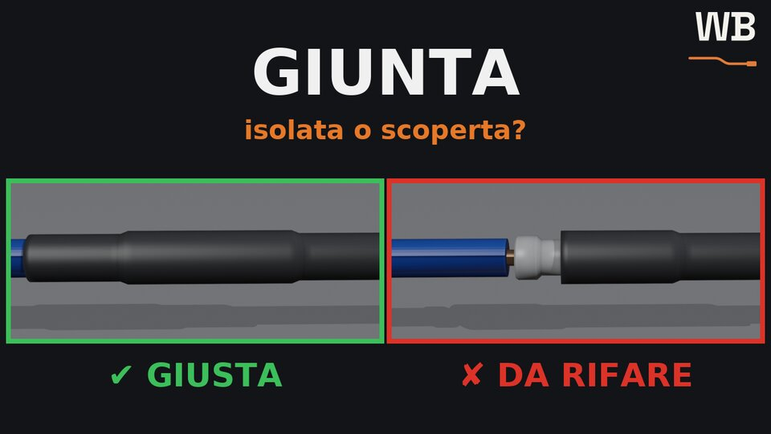
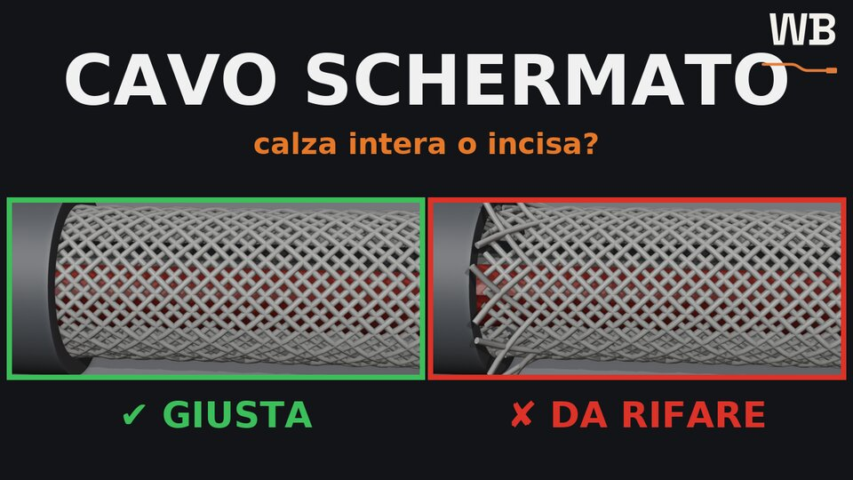
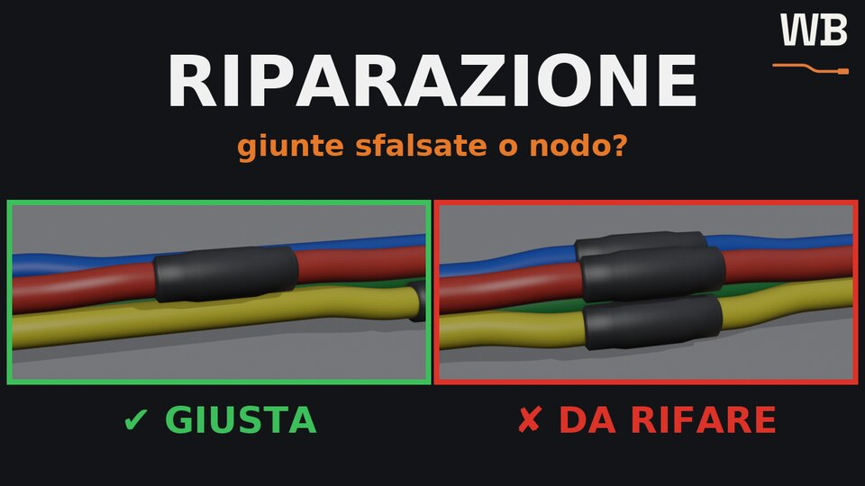
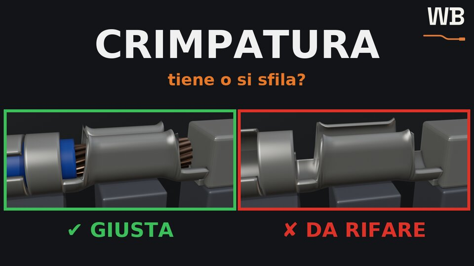
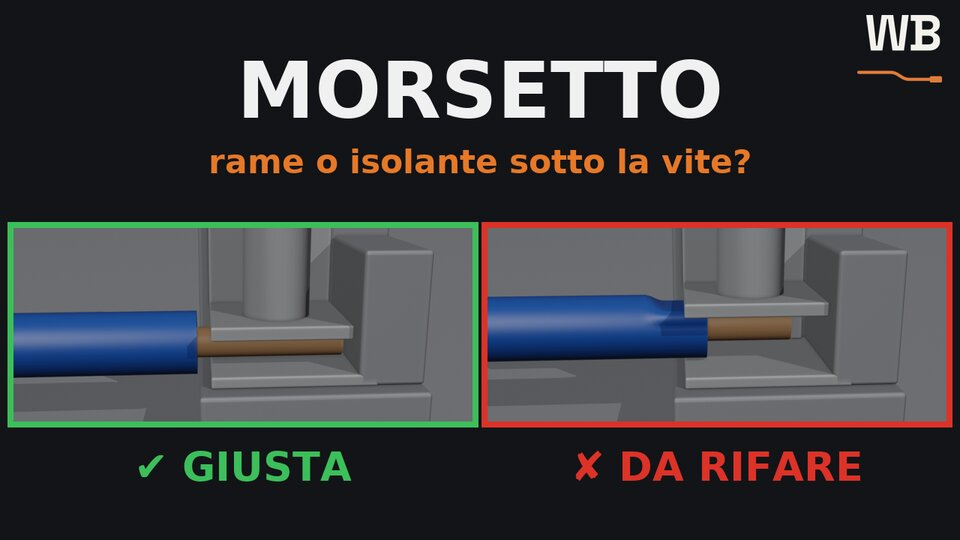

La guida WireBench · cablaggi dal 1978
Il manuale del cablatore
Buono o da rifare: come lavorare e controllare i cablaggi elettrici, situazione per situazione.
Taglio, spelatura, crimpatura, saldatura, connettori, protezioni, collaudo e riparazione: una guida pratica per chi fa cablaggi al banco. L'abbiamo scritta in Nuova Elettronica, ad Avigliana (Torino), dove facciamo cablaggi dal 1978.
In preparazione: esce quando sarà completa, con tutte le foto.

Capocorda appoggiato direttamente sulla superficie con rondella e dado sopra, conforme; rondella messa sotto il capocorda, la corrente passa dalla rondella e il collegamento scalda, da rifare. Apri su YouTube Il video si carica da YouTube solo quando premi il pulsante.
Cosa trovi nella guida
- Spelatura: togliere l'isolante senza incidere il conduttore e senza tranciare i trefoli.
- Crimpatura: scegliere contatto e attrezzo, crimpare, controllare e riconoscere i difetti tipici.
- Saldatura, giunzioni e connettori: i collegamenti del cablaggio, passo per passo.
- Controllo e collaudo: come capire, guardandolo, se un cablaggio è buono o va rifatto.
Per chi comincia in un reparto cablaggi, per il cablatore che vuole un riferimento e per chi forma gli operatori. Vedi l'indice dei capitoli →
I video della guida
Ogni video mostra la stessa lavorazione fatta bene e da rifare, al rallentatore. Nuovi video ogni settimana sul canale WireBench Lab.
-

Capitolo 7
Spelatura dei cavi: giusta o da rifare? Come riconoscere i trefoli tranciati (cap. 7)
La stessa spelatura fatta due volte: parziale con il testimone, conforme; con la lama troppo chiusa che trancia i trefoli, da rifare.
-

Capitolo 11
Crimpatura dei contatti: isolante sotto le alette? Giusta o da rifare (cap. 11)
Conduttore e isolante nelle zone giuste del contatto, conforme; isolante finito sotto le alette del conduttore per una spelatura troppo corta, da rifare.
-

Capitolo 12
Crimpatura: il rame non arriva in fondo? Come riconoscerlo a vista (cap. 12)
Punta dei trefoli visibile oltre le alette, conforme; conduttore che non arriva in fondo al contatto per una spelatura troppo corta, da rifare.
-

Capitolo 12
Crimpatura: trefoli fuori dal contatto? Perché è da rifare (cap. 12)
Trefoli compatti tutti dentro le alette, conforme; due trefoli aperti in spelatura rimasti fuori dalle alette, da rifare.
-

Capitolo 7
Spelatura cavi: conduttore inciso dalla lama? Giusta o da rifare (cap. 7)
La stessa spelatura completa a mano fatta due volte: lama regolata per la sezione che taglia solo l'isolante, conforme; lama troppo profonda che incide il rame con segni ad anello, da rifare.
-

Capitolo 8
Stagnatura dei cavi: stagno sotto l'isolante? La prova della piegatura (cap. 8)
Stagnatura breve che si ferma prima dell'isolante, conforme; stagno risalito sotto l'isolante che irrigidisce il filo, riconosciuto con la prova di piegatura, da rifare.
-

Capitolo 14
Puntali per cavi flessibili: trefoli fuori dal collarino? Giusto o da rifare (cap. 14)
Trefoli raccolti tutti dentro il puntale e isolante in fondo al collarino, conforme; due trefoli rimasti fuori dal collarino e piegati all'indietro, da rifare.
-

Capitolo 16
Saldatura su terminale a coppa: troppo stagno? I cinque sguardi (cap. 16)
Stagno fino al bordo della coppa con il filo visibile, conforme; stagno che trabocca a palla e nasconde il conduttore, da rifare.
-

Capitolo 19
Inserire i contatti nel connettore: fino allo scatto e prova di tenuta (cap. 19)
Contatto spinto dritto fino allo scatto che non si muove alla prova di tenuta, conforme; contatto non bloccato che arretra nella via, da rifare.
-

Capitolo 21
Guaina termorestringente: come si ritira senza bruciarla (cap. 21)
Tubetto scaldato dal centro verso le estremità girando intorno al pezzo, aderente e liscio, conforme; aria calda ferma in un punto che brucia il tubetto e fa le bolle, da rifare.
-

Capitolo 6
Tagliare i cavi a misura: taglio dritto con il tronchese (cap. 6)
Taglio dritto con un colpo solo, conduttore tondo e trefoli insieme, conforme; tronchese con la lama rovinata che schiaccia il conduttore e strappa i trefoli, da rifare.
-

Capitolo 17
Giunta crimpata e termorestringente: come isolare una giunta (cap. 17)
Termorestringente centrato che copre tutto il metallo e si sovrappone all'isolante dei cavi, conforme; tubetto spostato da un lato che lascia scoperto il metallo del giunto, da rifare.
-

Capitolo 20
Fascette sul fascio di cavi: la forza giusta senza schiacciare (cap. 20)
Fascetta stretta con la tensione regolata, fascio fermo e cavi tondi, conforme; tensione troppo alta che schiaccia i cavi esterni e segna l'isolante, da rifare.
-

Capitolo 18
Cavo schermato: togliere la guaina senza incidere la calza (cap. 18)
Lama regolata che taglia solo la guaina e lascia la calza intera, conforme; lama troppo profonda che incide la calza ad anello, con fili tagliati che sporgono, da rifare.
-

Capitolo 28
Riparare cavi nel fascio: giunte sfalsate, non tutte nello stesso punto (cap. 28)
Tre cavi riparati con le giunte sfalsate lungo il fascio, almeno una giunta di distanza tra l'una e l'altra, conforme; giunte tutte nello stesso punto che si toccano e fanno un nodo rigido nel fascio, da rifare.
-

Capitolo 16
Saldatura dei cavi: isolante fuso o ritirato? Come evitarlo (cap. 16)
Calore e tempo giusti, isolante integro con un tratto corto di rame scoperto, conforme; punta tenuta troppo a lungo vicino all'isolante, che si fonde e si ritira lasciando troppo rame scoperto, da rifare.
-

Capitolo 12
Crimpatura lenta: perché il cavo si sfila dal contatto (cap. 12)
Pinza chiusa fino al cricchetto, alette strette sul rame, conforme; pinza aperta prima del cricchetto, alette socchiuse e cavo che si sfila alla trazione, da rifare.
-

Capitolo 14
Morsetto a vite: isolante sotto la vite? Perché il cavo si muove (cap. 14)
Conduttore tutto sotto la piastrina e isolante vicino al morsetto senza entrarci, conforme; spelatura troppo corta con l'isolante schiacciato sotto la piastrina e il cavo che si muove alla prova di tenuta, da rifare.
-
Capitolo 14
Capocorda a occhiello: la rondella non va sotto il capocorda (cap. 14)
Capocorda appoggiato direttamente sulla superficie con rondella e dado sopra, conforme; rondella messa sotto il capocorda, la corrente passa dalla rondella e il collegamento scalda, da rifare.
WireBench Lab
Riparazioni e repliche di cablaggi d'epoca
Hai un'auto o una moto d'epoca con il cablaggio rovinato e un ricambio che non si trova? Lo ripariamo, oppure lo rifacciamo nuovo partendo dal tuo originale: stesse lunghezze, stesso percorso, terminali al loro posto.
- Lavoriamo soprattutto su auto e moto italiane, anche modelli rari che nessuno riproduce.
- Lavoriamo solo sul cablaggio, non sull'impianto elettrico del veicolo.
- Mandaci le foto: la prima analisi sulle foto è gratis.
- Prezzo su preventivo, caso per caso. Garanzia di 12 mesi sulla lavorazione.
Guarda come lavoriamo
Sul canale YouTube WireBench Lab (@wirebenchlab) filmiamo i lavori al banco: solo mani, attrezzi e cablaggio.